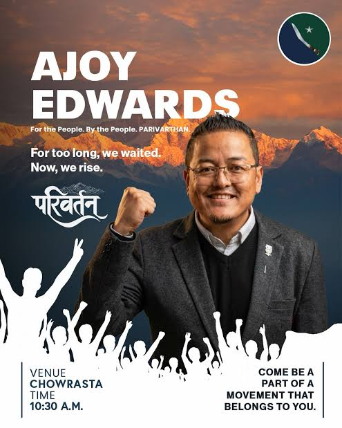

CLASSIFIED // POLITICAL ANALYSIS DOSSIER
DOSSIER–01
Ajoy Edwards: The Potato of Darjeeling Politics?
A Generational Shift or a Calculated Political Convergence?
EXECUTIVE SUMMARY
This dossier examines the political convergence between Ajoy Edwards and Bimal Gurung, questioning whether the alliance represents genuine political transformation or the completion of a long-term generational strategy.

THE CONVERGENCE
One built the emotional machinery. The other modernized the interface. This alliance may not have been sudden. It may have been inevitable.

THE HARVESTER — AE
Ajoy Edwards emerged as a digitally fluent, Gen-Z focused political figure, bringing transparency optics, social media mobilization, and modern branding into hill politics.
THE BACKEND — BG
While one controlled visibility and perception, the other understood alliances, electoral equations, and backend political survival structures.
POLITICAL GEOMETRY
Congress optics, independent restructuring, and BJP-aligned realities created a political triangle that continues to raise questions across the hills.
FINAL ASSESSMENT
History in the hills has a habit of repeating itself. Whether this truly marks Parivartan — or merely another political cycle preparing to repeat itself... God knows.